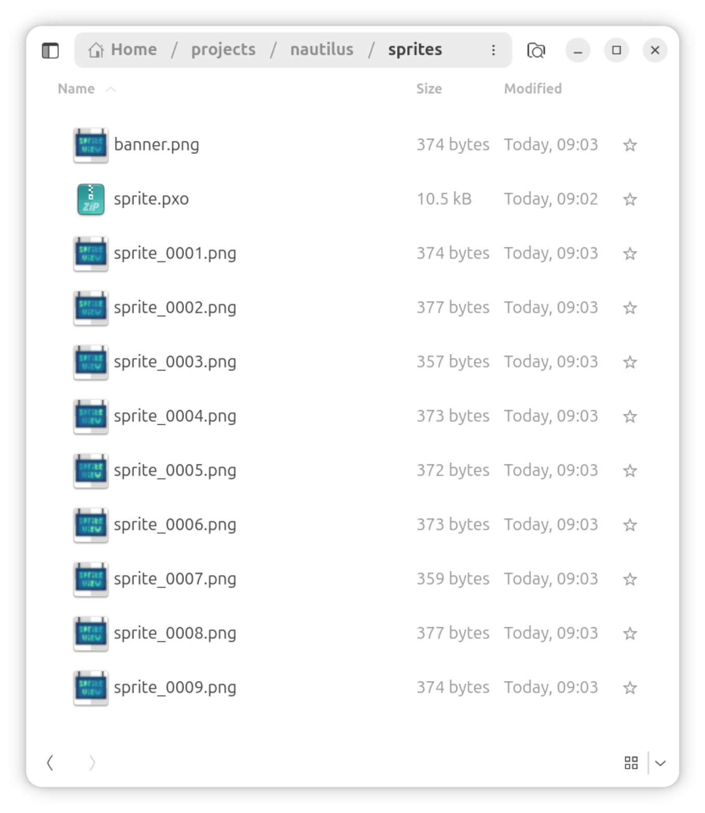
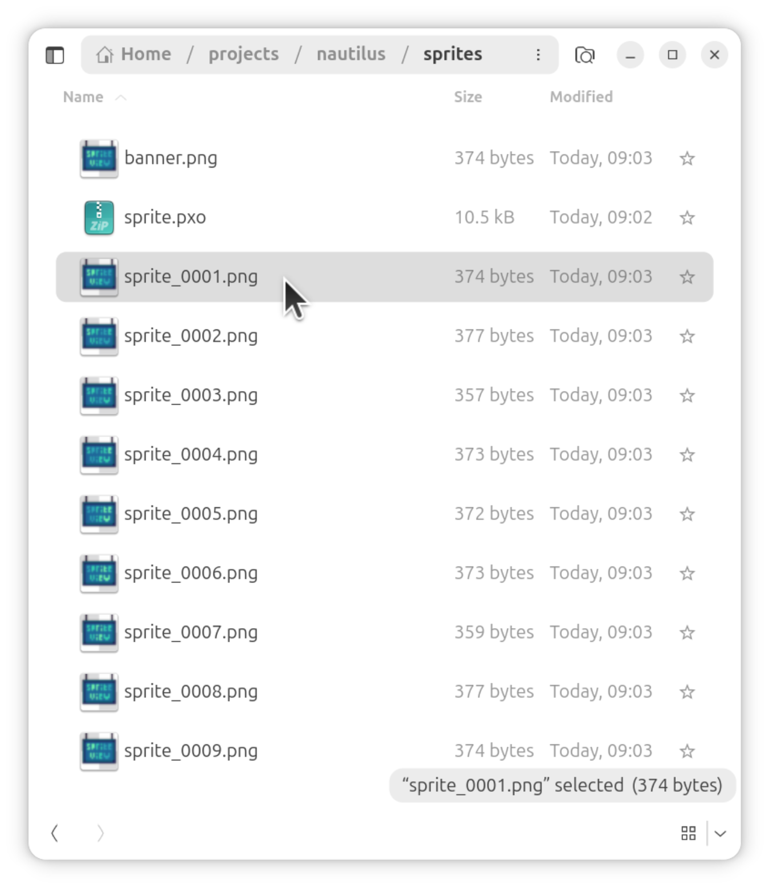
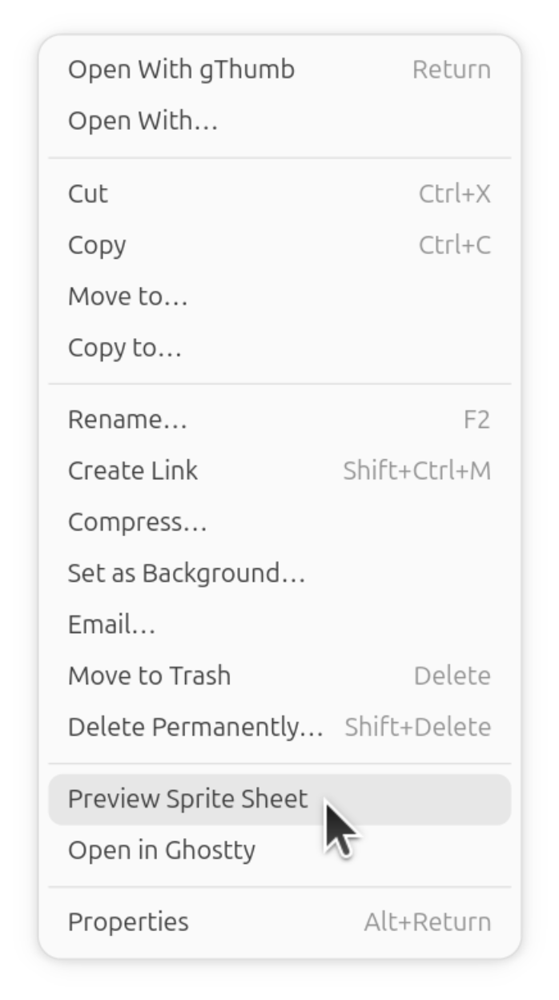
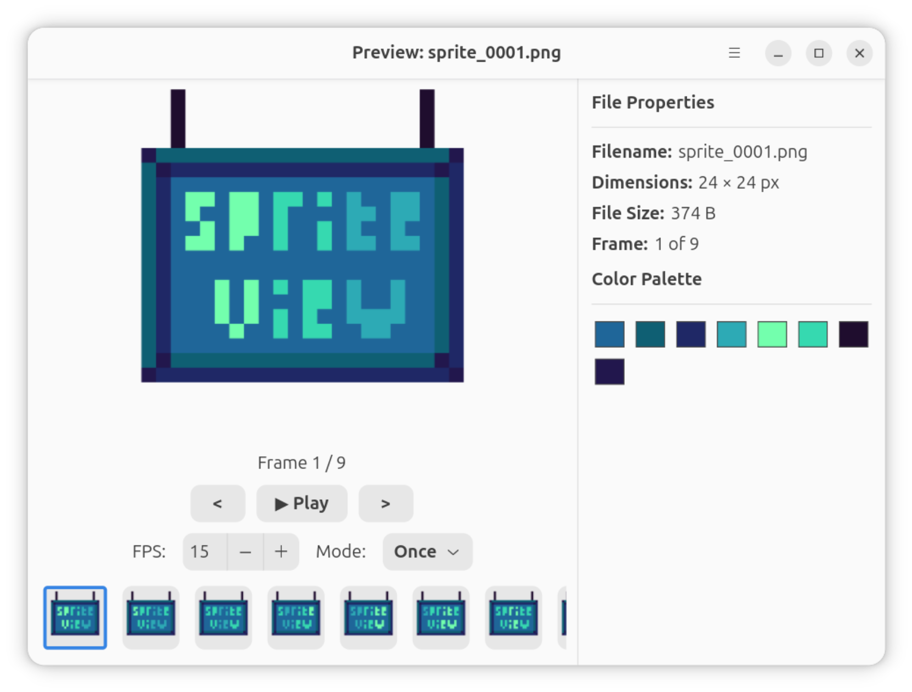
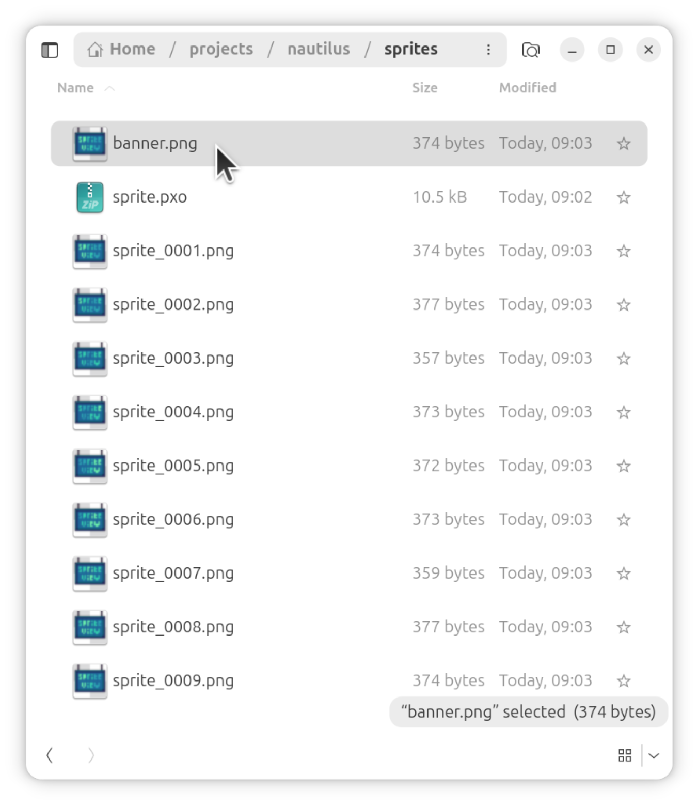
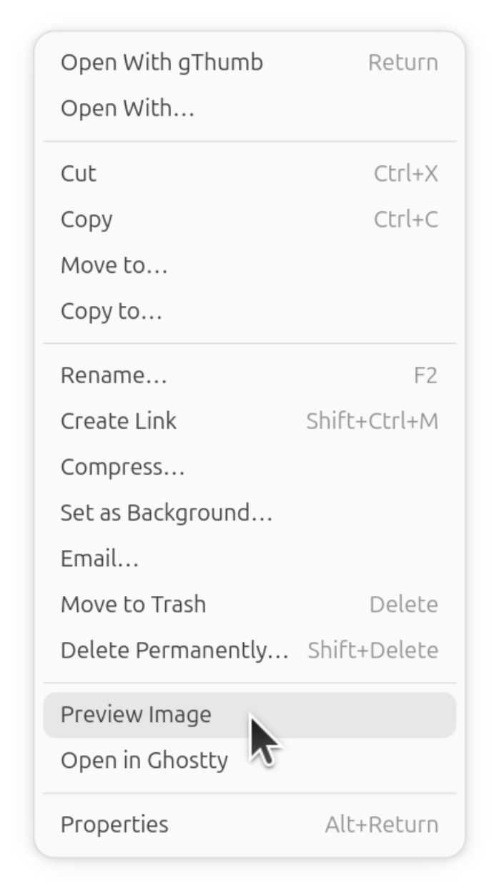
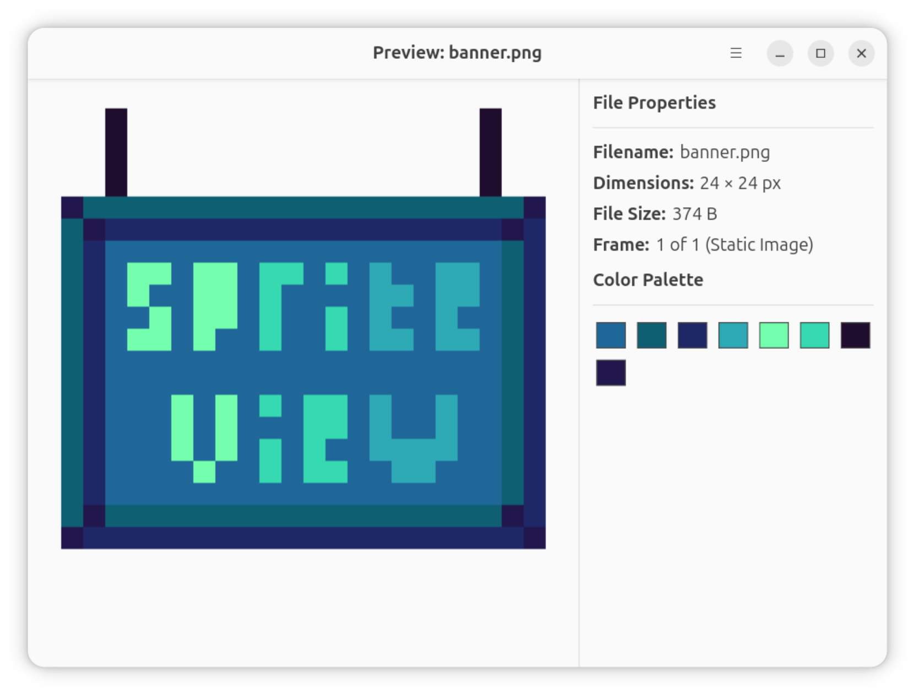
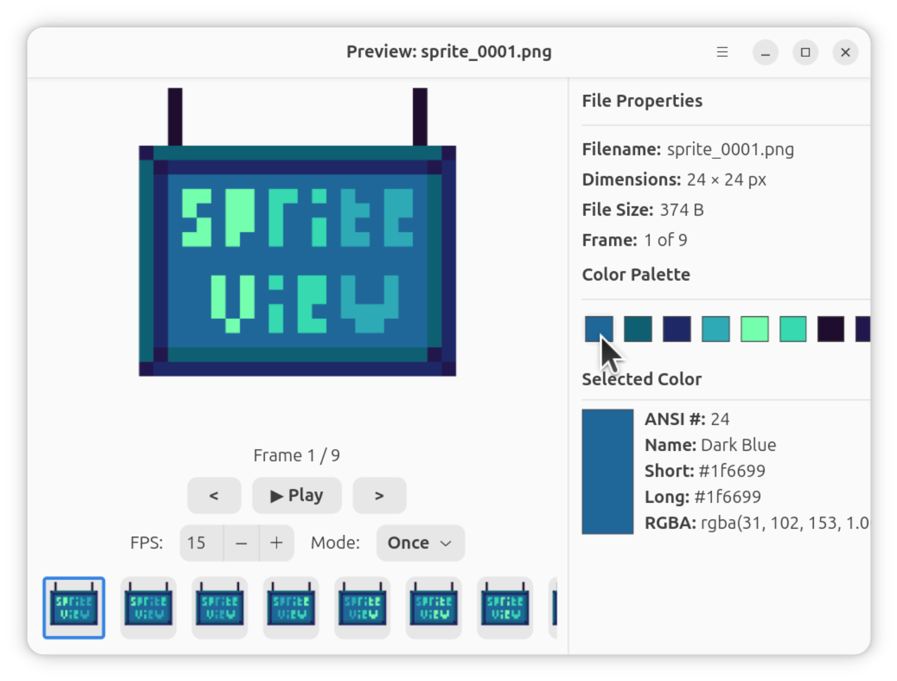
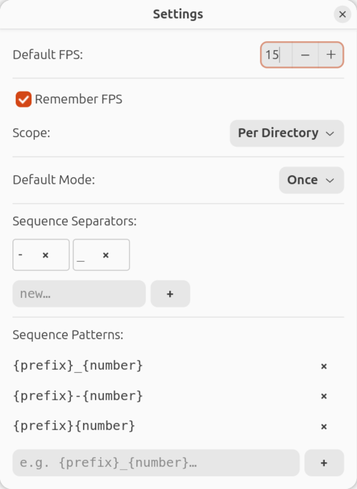

Engineering story
Recent crop-coordinate work keeps source pixels aligned across zoom and view modes.
Read the pixel-art preview and coordinate-safety storyA lightweight GTK4 app for pixel artists and developers. Run spriteview from the terminal, set it as your default image viewer, or use it directly inside GNOME Files — with nearest-neighbor scaling, cursor-centered zoom, sprite animation playback, color palette extraction, a pixel color picker, interactive crop & save, and advanced export options.
Click any screenshot to enlarge. Explore the spriteview CLI, crisp scaling, color tools, and the GNOME Files integration.

Step 1: Open FolderBrowse to your sprite folder in GNOME Files (Nautilus). SpriteView integrates directly into the right-click menu.

Step 2: Auto-DetectionSelect just a single frame (e.g. sprite_0001.png). SpriteView automatically detects and gathers the rest of the animation sequence!

Step 3: Context MenuRight-click your selection and choose 'Preview Sprite Sheet' from the native context menu.

Step 4: PlaybackSpriteView opens, showing the reconstructed sequence playing back smoothly as an animation loop with controls.

Step 1: Select ImageLocate and highlight a single image file (like banner.png) that you want to preview inside Nautilus.

Step 2: Context MenuRight-click the highlighted file and select 'Preview Image' from the native context menu.

Step 3: Crisp RenderSpriteView opens displaying the image with crisp, pixel-perfect boundaries and persistent background settings.

Palette ExtractorExtracts top colors. Click swatches to view details in the sidebar, matching closest ANSI 256 indices and Hex/RGBA strings.

Settings PanelCustomize defaults via a standalone Settings dialog. Set default FPS, playback behavior, and define custom sequence separators and filename patterns.
Use spriteview as your default image viewer system-wide. It handles single images, multi-file sequences, and whole folders — with smart auto-detection, crisp scaling, interactive crop & save, and headless or GUI-guided export — from the terminal or via desktop "Open With".
Pass a folder path to open the file picker directly in that directory. CLI exports write to the current working directory. Omit the format with --export to open the Advanced Export Options GUI dialog (supports scaling, palette reduction, and ANSI 256 color mapping). Use the Crop toolbar button inside the viewer to interactively trim images before saving or exporting.
Lightweight and native — built for pixel artists, game developers, and anyone who opens a lot of PNGs.
Uses sharp nearest-neighbor integer scaling to keep sprite frames crisp and preserve structural pixel grids when expanding images.
A dedicated layout panel shows file metadata, original resolution, storage size, and frame counts in real time.
Dynamically computes the top 16 colors in any frame. Recycles widgets inside a flow container to keep CPU usage low while playing.
Click swatches to resolve their exact Hex, RGBA, and nearest ANSI 256 index/common name definitions inside the properties tab.
Includes complete timeline animations (play/pause/steps), a spinbutton FPS speed config, and loop modes selector.
Open standalone settings from the window menu to configure default FPS, define custom sequence separators, and manage filename pattern matching rules.
Use spriteview as your default PNG/GIF viewer system-wide. The installer registers a .desktop entry and MIME associations so it appears in "Open With" and file manager defaults — no Nautilus required.
Drag a crop box directly on the preview with pixel-snapped 8-way resize handles and a live dimension indicator. Apply the crop in memory across all frames, then save instantly or use "Save as…" — all without leaving the app.
Open the export dialog to choose format (PNG / GIF / ICO / WebM), scale (1× – 8× or custom) with Nearest Neighbor or Bilinear filter, reduce the color palette down to 2–256 colors with optional shared-palette across frames, and map to the ANSI 256 terminal color space.
Step through every image in the same folder with the prev/next buttons in the title bar or the Page Up / Page Down keyboard shortcuts — no need to reopen the file picker between images.
Recent crop-coordinate work keeps source pixels aligned across zoom and view modes.
Read the pixel-art preview and coordinate-safety storyDeploy the extension to Nautilus on modern Linux distributions in minutes.
SpriteView is built on GTK4 and requires the Python bindings for Nautilus. Select and run the command for your Linux distribution:
Pick one: the one-liner installs and registers everything automatically; the signed tarball is for a manual, verified install.
Prefer not to pipe a script? Download the
signed tarball,
verify it against SHA256SUMS with
minisign
(minisign -V -p minisign.pub -m SHA256SUMS), then copy spriteview into
~/.local/bin/ and ~/.local/share/nautilus-python/extensions/ yourself.
Right-click any supported image (PNG, GIF, WebP, BMP, JPG) in Nautilus and choose "Preview Sprite Sheet" or "Preview Image" from the menu.
The installer also deploys a standalone spriteview CLI executable to ~/.local/bin/spriteview. You can run it standalone to view or export sprites directly from your terminal:
See spriteview --help for details, including standalone configuration (--settings) and info (--about).